Cosmology with SNe Ia: measuring growth-rate of structures with the new generation of survey
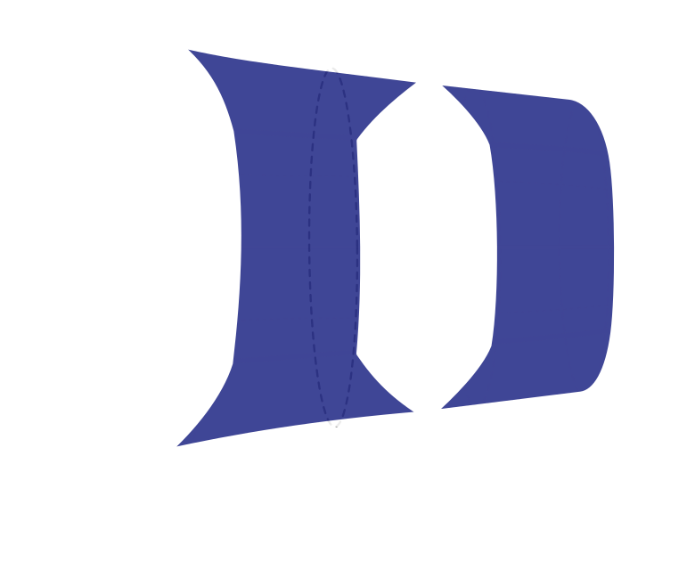
Cosmology with SNe Ia in a nutshell
Type Ia supernovae are exploding white dwarfs!
Type Ia supernovae are standard candles!
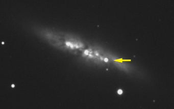
Cosmology with SNe Ia in a nutshell
Cosmology with SNe Ia in a nutshell
Distance modulus: $$ \mu = 5 \mathrm{log}\left(d_L / 10\ \text{pc}\right) = m - M$$
SNe Ia luminosity is corrected for known
correlations!
-
Brighter-slower: higher stretch $x_1
\Rightarrow $ brighter SNIa
-
Brighter-bluer: lower color $c
\Rightarrow $ brighter SNIa
-
Mass step: SN Ia in more massive
galaxies are brighter
$\mu_\text{obs} = m_B - (M_B$
$- \alpha x_1$
$+ \beta c$
$+ \Delta_M$
$)$
Remaining intrinsic scatter $\sigma_\mu
\sim 0.12$ mag
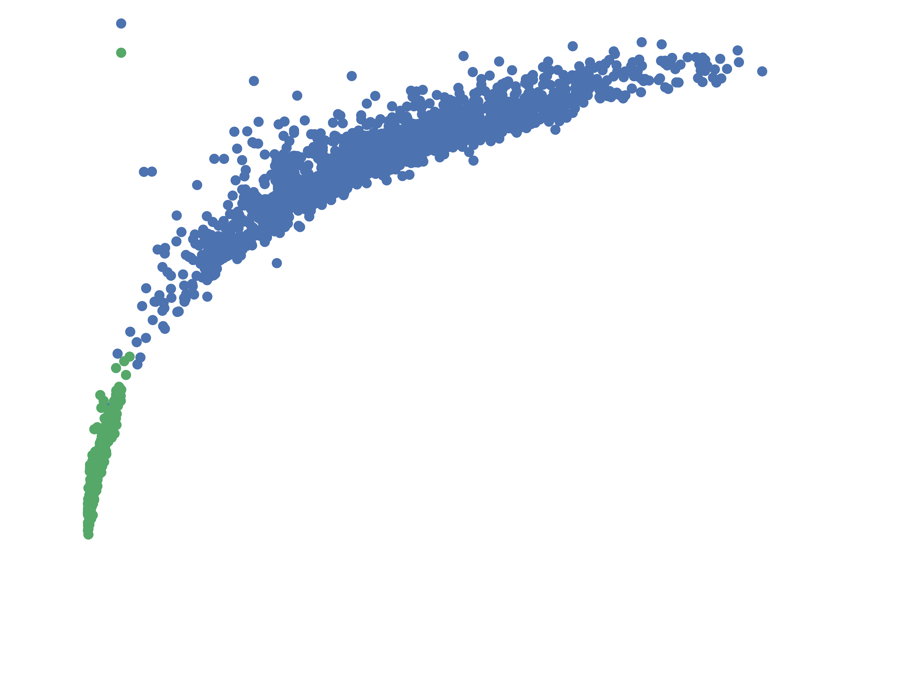
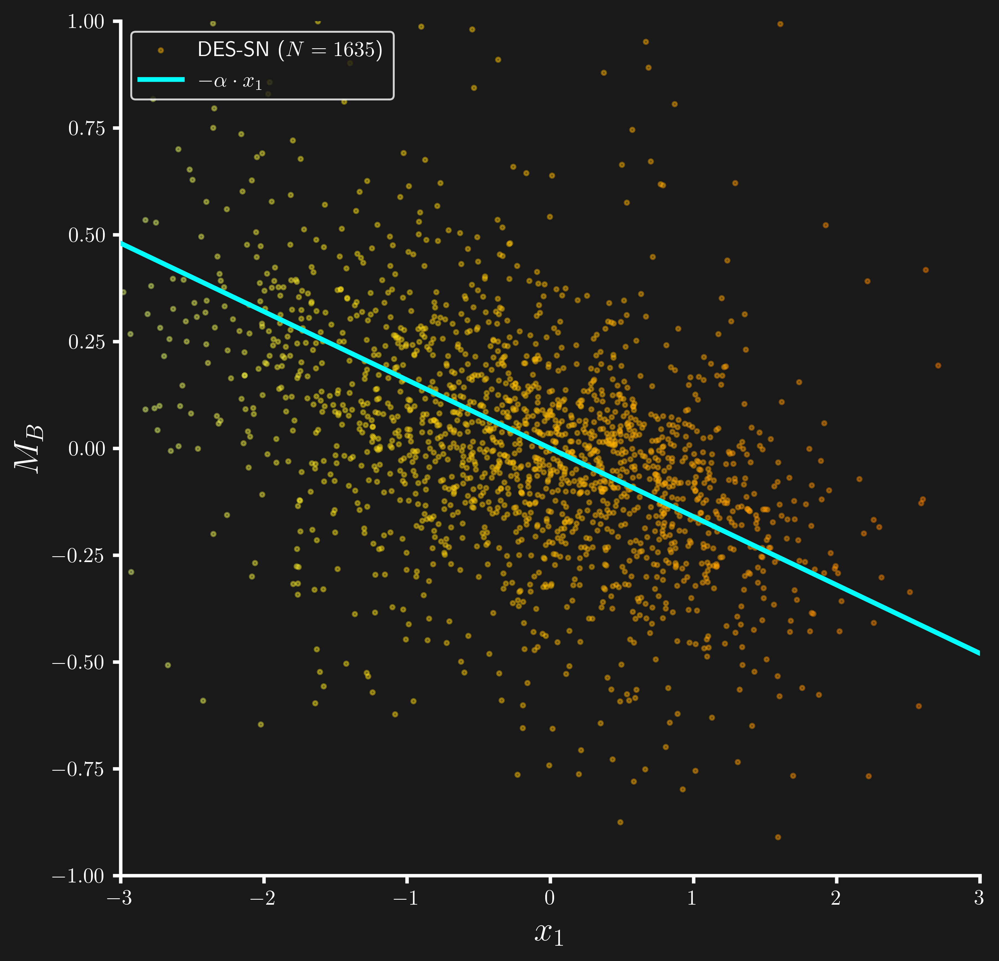
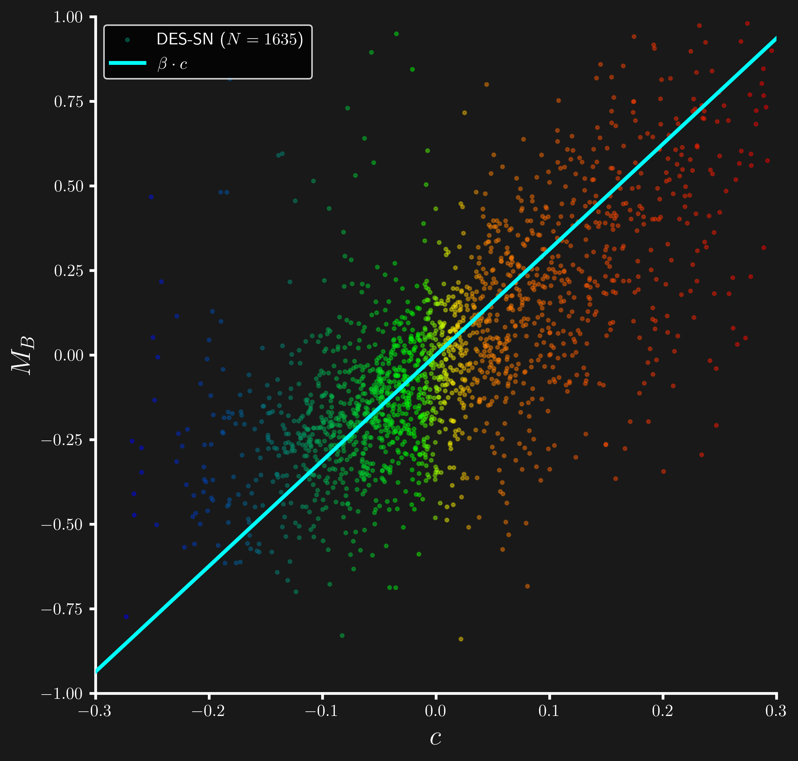
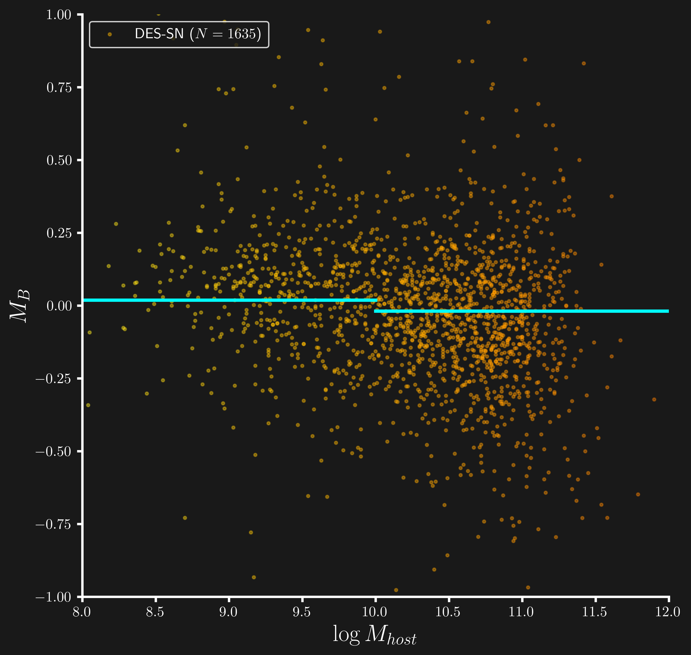
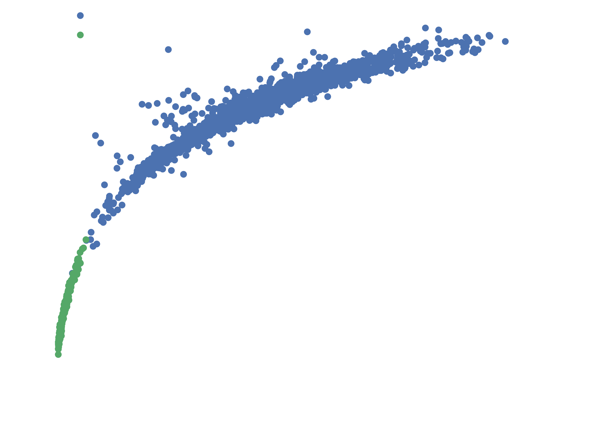
Cosmology with SNe Ia in a nutshell
\(f\sigma_8\) as a probe for general relativity
Cosmological principle:
Universe is
homogeneous
Observations:
Universe is
not exactly homogeneous
Matter density fluctuations:
$\delta(\mathbf{x}) =
\frac{\rho(\mathbf{x})}{\bar{\rho}} - 1$
$\sigma_8$ : fluctuation over sphere
of
8 Mpc.$h^{-1}$ radius
$\delta(\mathbf{x}) = \sigma_8
\tilde{\delta}(\mathbf{x})$
Fluctuations evolve over time
$\delta(\mathbf{x}, t) =
\delta(\mathbf{x})D(t)$
Evolution of structures:
Dark
energy vs Gravity
$$f = \frac{\text{d}\ln D}{\text{d}\ln a}$$
$f \simeq \Omega_m^\gamma$
General Relativity + $\Lambda$CDM: $\gamma
\simeq 0.55$
$\gamma \equiv$ Growth index
$f$ measurement is generally degenerate with
$\sigma_8$ !
$\Rightarrow f\sigma_8$

Image credits: Illustris TNG
How to measure $f\sigma_8$ ?
Velocities are probes of $f\sigma_8$!
Velocity statistics directly depend on
$f\sigma_8$:
$\langle
v(\mathbf{x_i})v(\mathbf{x_j})\rangle
\propto \left(f\sigma_8\right)^2$
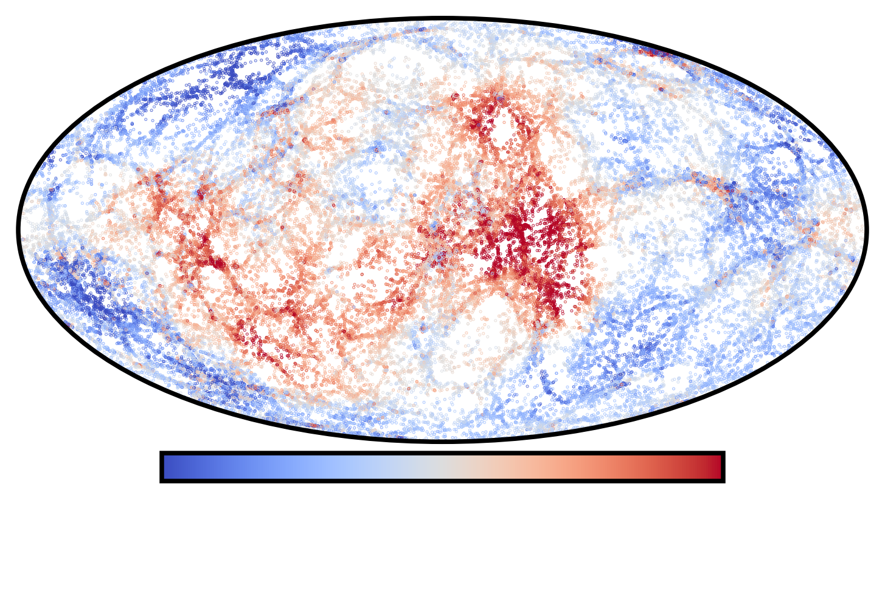
Image credits: Illustris TNG
Estimating velocities from SNe Ia
Observed redshifts:
$1 + z_\mathrm{obs} = (1 + z_\mathrm{cos}) (1 +
z_\mathrm{p})$ with $z_p\simeq v_p / c$
Hubble residuals:
$\Delta\mu = \mu_\mathrm{obs} -
\mu_\text{th}(z_\mathrm{obs}) = 0$
$\Delta\mu = \mu_\mathrm{obs} -
\mu_\text{th}(z_\mathrm{obs})
\simeq-\frac{5}{c\ln10}\left(\frac{(1 +
z)c}{H(z)r(z)} - 1\right)v_p$
$v_p \simeq -\frac{c\ln10}{5}\left(\frac{(1 + z)c}{H(z)r(z)} - 1\right)^{-1}\Delta\mu$ $\sigma_{v_p} \simeq -\frac{c\ln10}{5}\left(\frac{(1 + z)c}{H(z)r(z)} - 1\right)^{-1}\sigma_{\Delta\mu}$


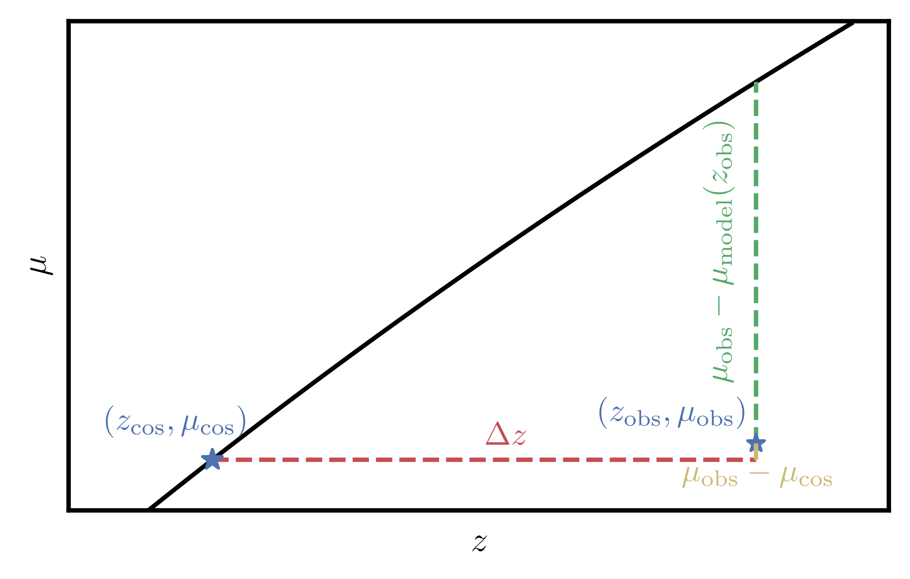

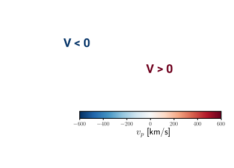
Constraint on $f\sigma_8$ with the maximum likelihood mehod
The Maximum likelihood method is implemented within the
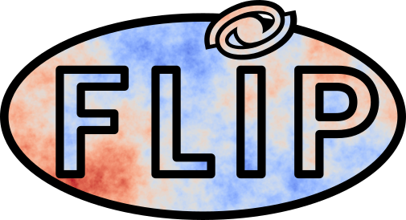
package (Ravoux, Carreres et al. 2025)We want to maximize the likelihood function: $$\mathcal{L}(f\sigma_8; v_p) \propto \left(2\pi\right)^{-\frac{N}{2}}\left|\text{C}(f\sigma_8)\right|^{-\frac{1}{2}}\exp\left(-\frac{1}{2}\boldsymbol{v_p}^T\text{C}(f\sigma_8)^{-1}\boldsymbol{v_p}\right)$$
$\text{C}(f\sigma_8) =\text{C}^\mathrm{obs} + \text{C}^{vv}(f\sigma_8)$
The maximum likelihood mehod: velocity covariance
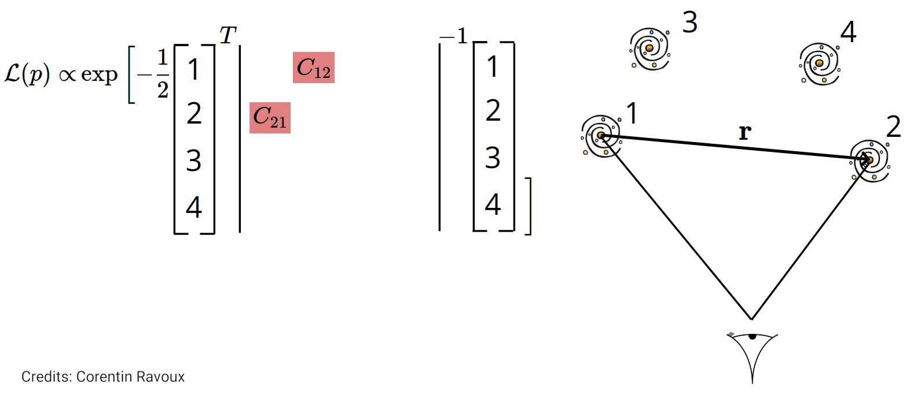
Forecast results
What about systematics?
The intrinsic scatter of SNe Ia
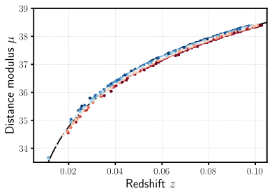
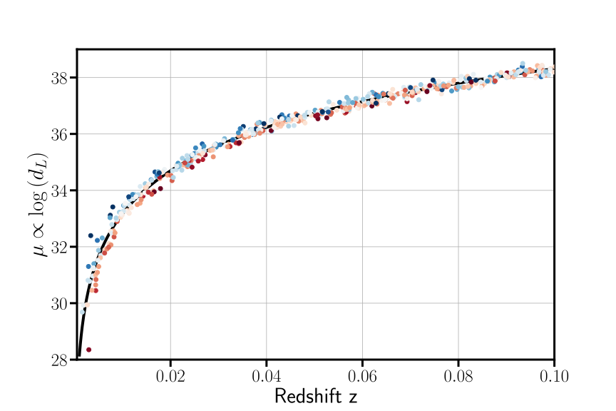
The intrinsic scatter of SNe Ia
Main systematic of DES 5-year dark energy
analysis
(Vincenzi et al. 2023)!!!
What about $f\sigma_8$ ???
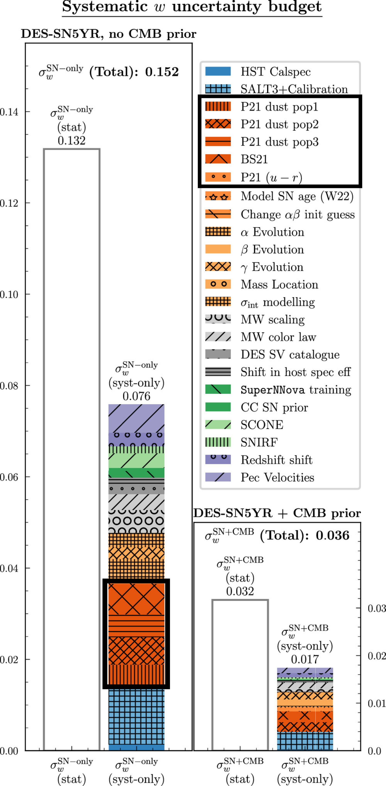
The intrinsic scatter of SNe Ia
-
Random coherent scatter (COH)
Achromatic
Unrealistic
-
The G10 model (Guy et al. 2010):
$\sim 70\%$ achromatic / $\sim 30\%$
chromatic
Historically used (Pantheon,
Pantheon+)
-
The C11 model (Chotard et al. 2011):
$\sim 30\%$ achromatic / $\sim 70\%$
chromatic
Historically used (Pantheon,
Pantheon+)
-
The BS21 model (Brout & Scolnic 2021)
Currently favored by data (DES
5-year)
Achromatic
Unrealistic
$\sim 70\%$ achromatic / $\sim 30\%$ chromatic
Historically used (Pantheon, Pantheon+)
$\sim 30\%$ achromatic / $\sim 70\%$ chromatic
Historically used (Pantheon, Pantheon+)
Currently favored by data (DES 5-year)
Simulation: LSST SN Ia sample
LSST simulated observation (OpSim)
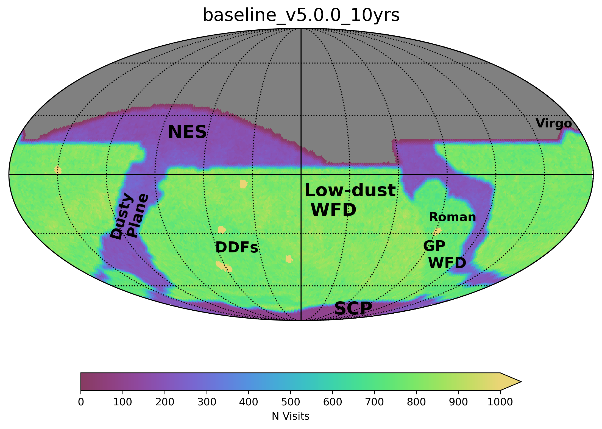
Velocity field from the Uchuu UniverseMachine simulation (Ishiyama et al. 2021, Aung et al. 2022)
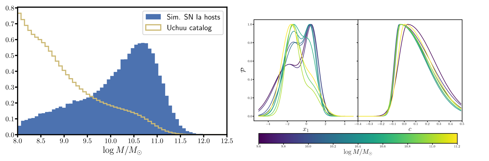
Realistics simulation of the LSST SN Ia sample
up to $z\sim0.1$
After quality cut $N\sim 7000$
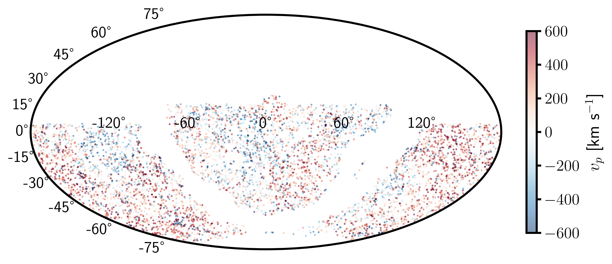
The intrinsic scatter of SNe Ia: results
-
True vel. fit:
Unbiased $f\sigma_8$
$\sigma_{f\sigma_8}\sim 5\%$
-
COH, G10 and C11:
Unbiased $f\sigma_8$
$\sigma_{f\sigma_8}\sim 13-14\%$
-
BS21: $\sigma_{f\sigma_8}\sim11\%$
$f\sigma_8$ is biased by $>20\%$
!!!
Unbiased $f\sigma_8$
$\sigma_{f\sigma_8}\sim 5\%$
Unbiased $f\sigma_8$
$\sigma_{f\sigma_8}\sim 13-14\%$
$f\sigma_8$ is biased by $>20\%$ !!!
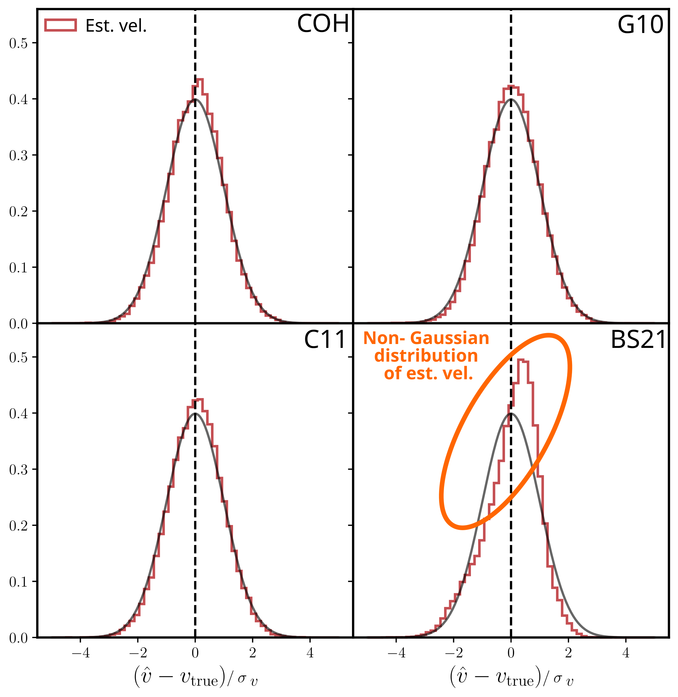
The intrinsic scatter of SNe Ia: the DEBASS survey
The DEBASS survey looking at low-z SNe Ia with DECam
with high precision - $\sigma_\mu \sim 0.1$
$\Rightarrow$ Ideal to study intrinsic scatter model
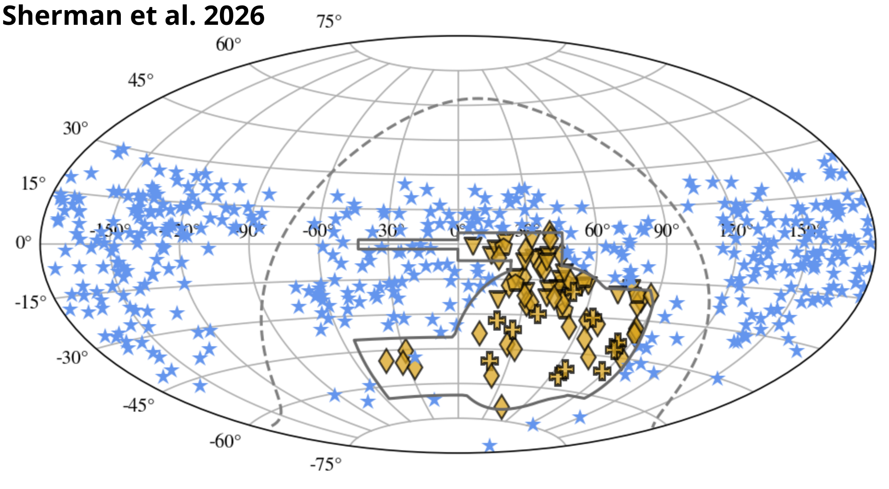
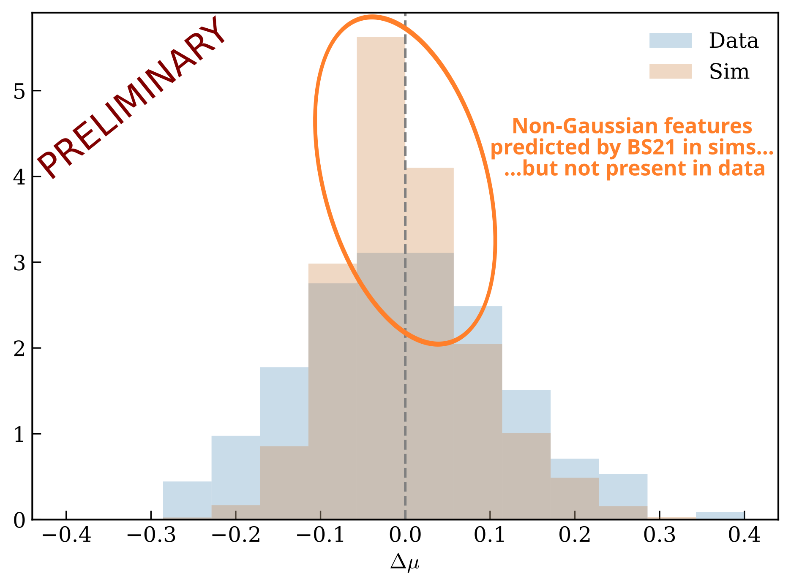
Cosmological analysis coming later this year:
Data Release & Local Cosmology (Sherman et al.
in prep),
SN Ia Dark Energy (Acevedo et al.
in prep),
Cross-probe cosmology (Brout et al.
in prep),
$f\sigma_8$ (Carreres et al. in prep)
Another systematic: redshift space distorsion of the PV power spectrum
Positions are evaluated using $z_\mathrm{obs} \
\Rightarrow$ Redshift Space Distorsion
Empirical damping introduced in
Koda et al. 2014: $D_u =
\text{sinc}(k\sigma_u)$
$$\text{C}_{ij}^{vv}\propto (f\sigma_8)^2
\int_{k_\mathrm{min}}^{k_\mathrm{max}}
P(k){\color{red} D_u(k, \sigma_u)}^2 W_{ij}(k;
\mathbf{r}_i, \mathbf{r}_j) {\rm d}k$$
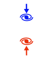
Calibrated from a fit of true vel. from randomly
sampled galaxies of the Uchuu simulation we
found
$\sigma_u \simeq 21 \text{ Mpc }h^{-1}$

Correlated with $f\sigma_8$ and estimated as a $\sim$6% systematic
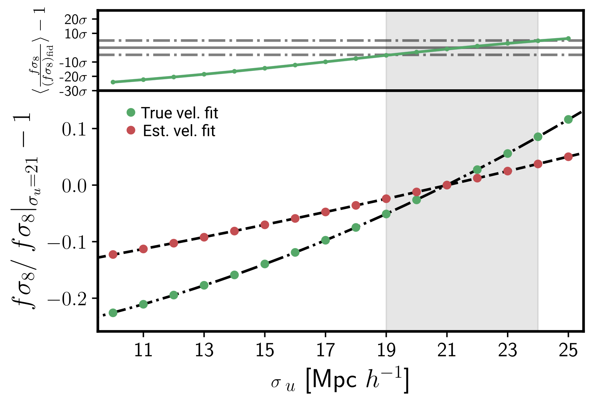
Conclusion
-
Measurements of $f\sigma_8$ provide a powerful
test of $\Lambda$CDM and General Relativity
-
Next-generation SNe Ia surveys have the
potential to deliver independent constraints on
$f\sigma_8$
-
Systematics must be better understood: SNe Ia
astrophysics, PV modeling, ...
-
Several low-$z$ survey results expected in the
coming years: DEBASS, ZTF, ATLAS, Rubin-LSST
Thanks for your attention!